Developing Microservices with Azure Service Fabric
Overview
One of the recent trends in enterprise architecture is the microservices architecture pattern. At its core, this pattern is a specialization of the Service Oriented Architecture pattern that gained popularity in the early 2000s, but extends that approach to building small and independently deployable applications and services that communicate using lightweight protocols (including HTTP and TCP). This arrangement presents several advantages:
- Services are easy to replace and maintain
- Services can be scaled independently
- Different programming tools and techniques can be employed in different services
Azure Service Fabric is a platform that supports developing and coordinating multiple services running on a cluster of virtual machines. While Service Fabric can be used to implement a variety of architectural patterns, it is ideally suited to developing and orchestrating microservice-based solutions.
Azure Service Fabric deployments can exist on-premises, in the cloud in Microsoft Azure, and even in other vendors' clouds. In Azure, however, Service Fabric offers a first-class platform whose benefits are not easily duplicated in other environments. As such, Service Fabric offers a robust platform for managing solutions as well as APIs for writing them.
It is important to note that while Service Fabric is one of the newer platform offerings within Microsoft Azure, it has been used internally by Microsoft for several years to power cloud services that include Azure SQL Database, DocumentDB, Cortana, Microsoft Power BI, Microsoft Intune, Azure Event hHbs, Azure IoT Hub, and Skype for Business, among others. Additional information about Azure Service Fabric and its history can be found here.
In this lab, you will use Visual Studio 2017 to create an Azure Service Fabric application consisting of two services. The first service will be a stateless service — in reality, an ASP.NET Core Web app — that provides a user interface (UI) for managing the inventory of a hypothetical catalog company. The second service will be a stateful service that stores inventory items and provides RESTFul access to them. By deploying both of these services and connecting them together, you will see first-hand what Azure Service Fabric is all about and how it facilitates scalability and resilience for the services it manages.
Objectives
In this hands-on lab, you will learn how to:
- Create a Service Fabric application using Visual Studio 2017
- Deploy a Service Fabric application from Visual Studio and test it on a local cluster
- Use Service Fabric Explorer to monitor a running Service Fabric application
- Write code that allows one service to communicate with another
- Use partitioning and Reliable Services to makes Service Fabric applications scalable and fault-tolerant
Prerequisites
The following are required to complete this hands-on lab:
You can configure PowerShell correctly by running it as administrator and executing the following command:
Set-ExecutionPolicy -ExecutionPolicy Unrestricted -Force -Scope CurrentUser
Additional information about configuring your development environment for Azure Service Fabric can be found here.
Exercises
This hands-on lab includes the following exercises:
Estimated time to complete this lab: 60 minutes.
Exercise 1: Create a Service Fabric solution
In this exercise, you will create an Azure Service Fabric application using Visual Studio 2017. Before you begin, make sure your development environment is configured with the tools and options specified in the Prerequisites.
-
Start Visual Studio 2017 as an administrator. This elevation of privilege is required in order for Visual Studio to work with the Service Fabric Local Cluster Manager, which lets you deploy, run, and debug Service Fabric applications on your development machine.
To start Visual Studio as an administrator in Windows 10, type "Visual Studio 2017" into the Windows search bar. Then right-click Visual Studio 2017 and select Run as administrator. When prompted to confirm that you want to run Visual Studio as administrator, answer Yes.
-
In Visual Studio, select New from the File menu, and then click Project.
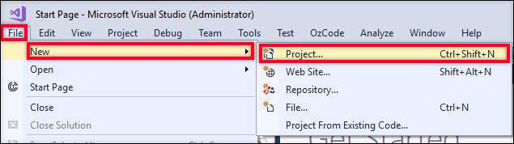
Creating a new project
-
Select Service Fabric Application as the project type and enter "ServiceFabricLab" as the project name. Then click OK.
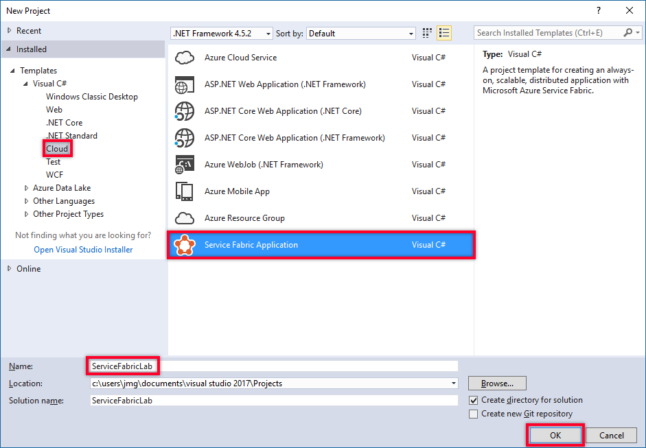
Specifying the project type
-
Select ASP.NET Core and set the name to "InventoryService." Then click OK.
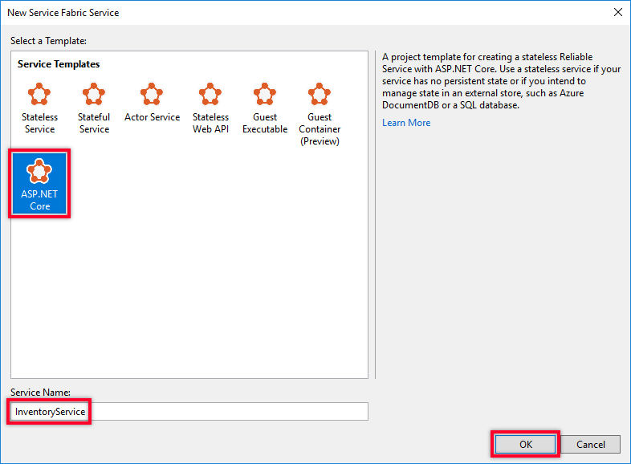
Selecting a service template
-
Make sure ASP.NET Core 1.1 is selected as the framework version. Then select Web Application and click OK.
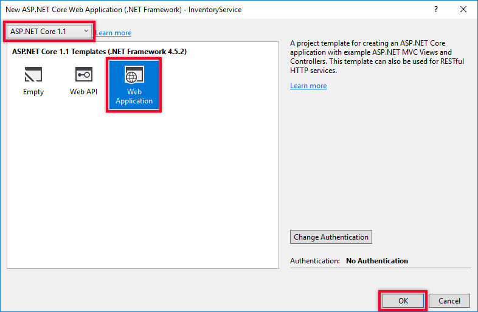
Creating an ASP.NET Core Web app
-
Go to Solution Explorer and confirm that the solution is structured like the one below. The solution should contain two projects named InventoryService and ServiceFabricLab. Service Fabric solutions consist of one or more Service Fabric service projects, as well as a Service Fabric application project.
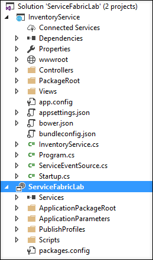
Viewing the solution in Solution Explorer
ServiceFabricLab is the Service Fabric application project. This project does not contain any code, but instead contains links to the services that are included in your Service Fabric application and information describing how the application will be packaged and deployed. One of the more important elements of this project is the application manifest. This file is named ApplicationManifest.xml and is located in the "ApplicationPackageRoot" folder. The application manifest is an XML file that describes your configuration to Service Fabric.
InventoryService is a stateless Service Fabric service project. If you examine the project properties, you will see that it is actually a .NET Core Console Application. This is a self-hosted Web application (one that does not rely on an external HTTP Server), which hosts the WebListener server within the processes managed by the Service Fabric runtime. Additional information about WebListener can be found here.
-
Open Program.cs in the InventoryService project. This file contains the following code, which registers the inventory service with the Service Fabric runtime. The InventoryService class is an instance of the StatelessService class defined in the Service Fabric SDK:
ServiceRuntime.RegisterServiceAsync("InventoryServiceType",
context => new InventoryService(context)).GetAwaiter().GetResult();
-
Now open InventoryService.cs and locate the CreateServiceInstanceListeners method override. This method is called by the Service Fabric runtime to configure the endpoints on which this service will listen for messages. In this case, it configures an instance of the WebListenerCommunicationListener class, which is used to connect Service Fabric to a WebListener HTTP service:
return new WebHostBuilder().UseWebListener()
.ConfigureServices(
services => services
.AddSingleton<StatelessServiceContext>(serviceContext))
.UseContentRoot(Directory.GetCurrentDirectory())
.UseStartup<Startup>()
.UseApplicationInsights()
.UseUrls(url)
.Build();
At this point, the application is basically a standard ASP.NET Core 1.1 MVC Web application. ASP.NET Core is a rich framework for building Web applications. Additional information about ASP.NET Core can be found here.
Exercise 2: Run the app in a local cluster
Now that you have created a basic Service Fabric project in Visual Studio 2017, it's time to see the application in action. In this exercise, you will deploy the application to a local cluster managed by the Service Fabric Local Cluster Manager and examine it in Visual Studio and in the Service Fabric Explorer.
-
Click the Start button in Visual Studio 2017. This will deploy the Service Fabric application to a local Service Fabric cluster. This may take a couple of minutes the first time you do it.
If the deployment fails, make sure Visual Studio 2017 is running as an administrator AND that PowerShell 3.0 or higher is installed with the execution policy set to "Unrestricted" for the administrative user.
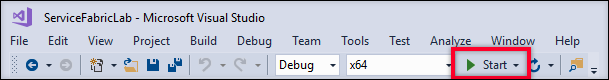
Starting the application
-
Confirm that a browser opens and shows the inventory service.

Browser showing the inventory service
-
Return to the Visual Studio and confirm that a Diagnostics Event window opened when you launched the app. The default templates for Service Fabric service applications in Visual Studio 2017 include a ServiceEventSource class. This class registers your application and provides helper events for writing trace and diagnostic information using Event Tracing for Windows.
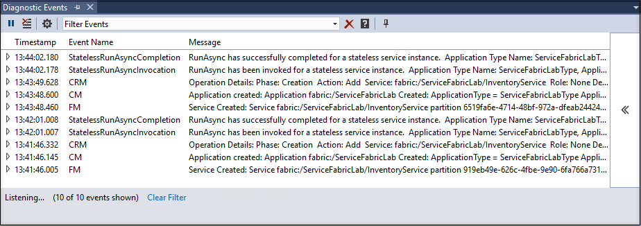
Viewing diagnostic events
-
Open HomeController.cs in the "Controllers" folder of the InventoryService project. Insert a breakpoint on the return statement in the About method by clicking in the left margin or placing the cursor on that line and pressing F9.
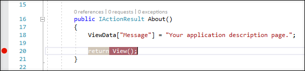
Inserting a breakpoint
-
Return to the browser and click About at the top of the page.
Navigating to the About page
-
Return to Visual Studio and confirm that the breakpoint was hit. Click the Continue button (or simply press F5) to resume execution.
-
The next step is to use the Service Fabric Explorer to view the status of the application as it runs on a local cluster. Right-click the Service Fabric Local Cluster Manager icon in the Windows system tray and select Manage Local Cluster from the ensuing menu.
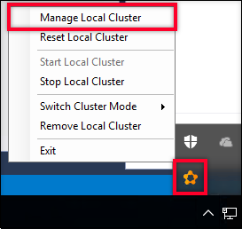
Launching the Local Cluster Manager
-
Confirm that Service Fabric Explorer appears in a browser. This dashboard view offers at-a-glance information about your cluster's health, including the status of applications deployed to the cluster and the status of the cluster's nodes. Links at the top of the dashboard provide access to additional information, including a cluster map and detailed health metrics.
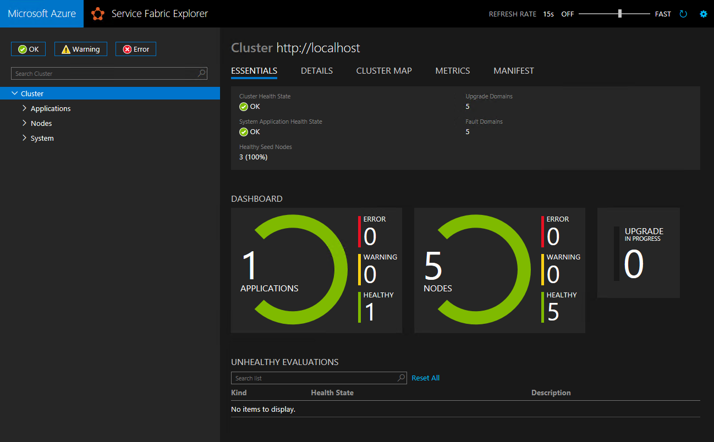
Service Fabric Explorer
-
Expand the Applications node in the treeview on the left and drill down until you find the running partition, whose name is a GUID. Click the partition to select it.
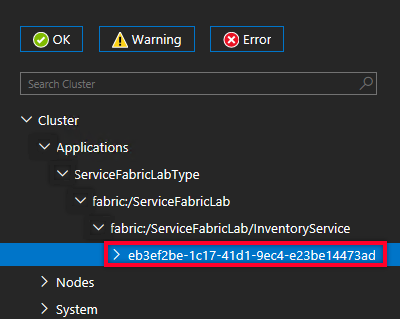
Selecting the running partition
-
Find the node name in the "Instances" section on the right.

Finding the node name
-
Expand the Nodes node in the treeview on the left. Then select the node you identified in the previous step. Spend some time exploring the information that is available.
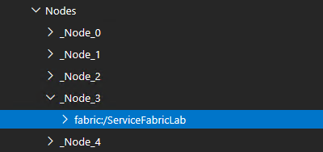
Viewing node information
-
Close your Web browser. Then return to Visual Studio and use the Debug -> Stop Debugging command to stop debugging.
When you stop debugging, Visual Studio will stop the application and remove it from the local cluster. It will be deployed again the next time you launch it from Visual Studio.
Exercise 3: Add another service to the cluster
In this exercise, you will add a new service to the Service Fabric application. This service will act as a repository for a hypothetical product-inventory system, and it will use Service Fabric Stateful Service Reliable Collections to maintain inventory data and make it available through RESTful Web API endpoints.
-
Right-click the ServiceFabricLab solution in Solution Explorer and use the Add -> New Project command to add a project to the solution. Select Class Library (.NET Framework) as the project type and name it "InventoryCommon." Then click OK.
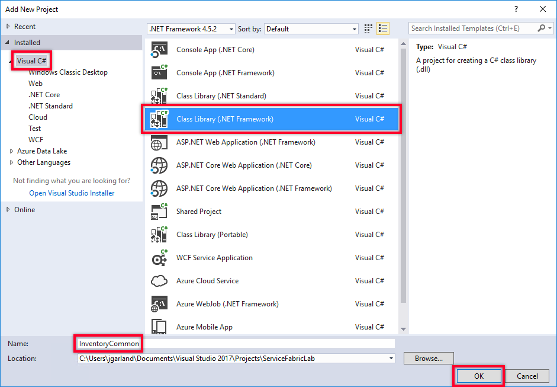
Adding a project to the solution
-
Delete the file named Class1.cs file from the InventoryCommon project. Then right-click the project in Solution Explorer and select Add -> Existing Item....
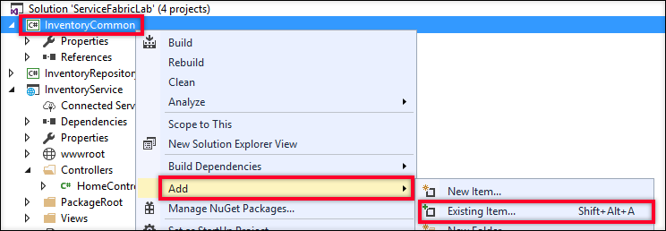
Adding items to the project
-
In the "Add Existing Item" dialog, browse to the "Resources" folder included with this lab. Select the file named InventoryItem.cs and click Add.
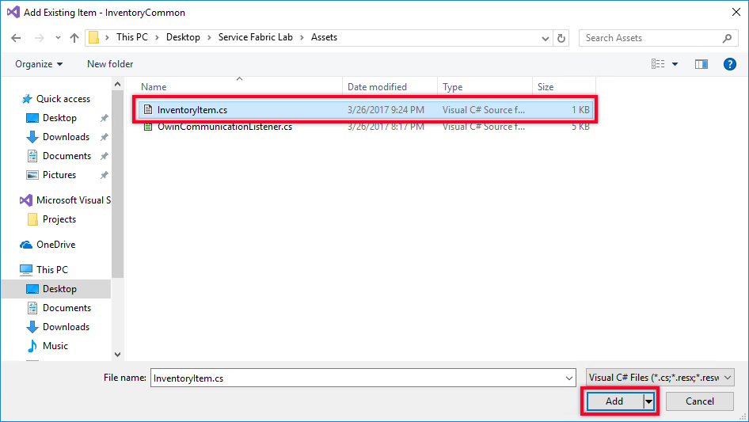
Importing InventoryItem.cs
This file contains an InventoryItem type that will be used to pass inventory items between services in the application. It also contains an enum named InventoryItemType that specifies the item type — Appliances, Flooring, etc. Later, this enum will be used as a key to divide the deployment into separate service partiions.
-
Right-click Services in the ServiceFabricLab project, and select Add -> New Service Fabric Service.....
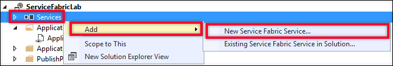
Adding a service
-
Select Stateful Service and enter "InventoryRepository" as the service name. Then click OK. This will add a new project named InventoryRepository to the solution.
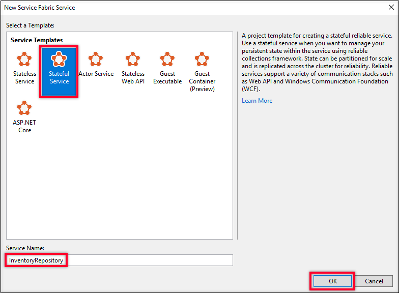
Adding a stateful service
-
Right-click the InventoryRepository project and select Manage NuGet Packages... from the context menu. Make sure Browse is selected in the Nuget Package Manager, and then type "Microsoft.AspNet.WebApi.OwinSelfHost" into the search box. Select Microsoft.AspNet.WebApi.OwinSelfHost from the search results and click the Install button. OK any changes shown to you and accept any licenses that are presented.
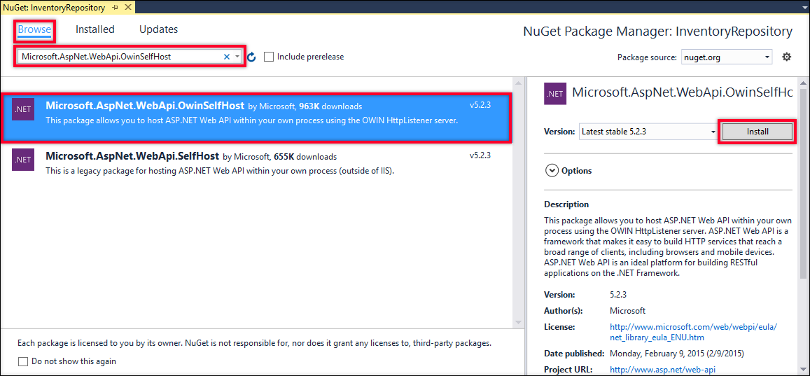
Adding the OWIN Self-Host Nuget Package
-
Right-click the InventoryRepository project in Solution Explorer and use the Add -> Existing Item command to import OwinCommunicationListener.cs from this lab's "Resources" folder.
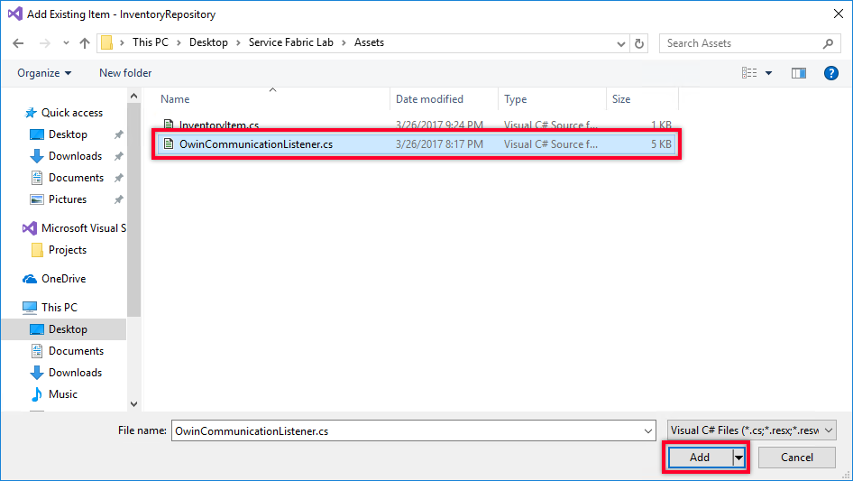
Importing OwinCommunicationListener.cs
-
Open InventoryRepository.cs and add the following using statements at the top of the file:
using System.Fabric.Description;
using InventoryRepository.ServiceFabric;
-
Delete the RunAsync method and replace the contents of the CreateServiceReplicaListeners method with the following code:
var endpoints = Context.CodePackageActivationContext.GetEndpoints()
.Where(endpoint => endpoint.Protocol == EndpointProtocol.Http || endpoint.Protocol == EndpointProtocol.Https)
.Select(endpoint => endpoint.Name);
return endpoints.Select(
endpoint => new ServiceReplicaListener(
serviceContext => new OwinCommunicationListener(
appBuilder => { WebHostStartup.ConfigureApp(appBuilder, StateManager); },
serviceContext,
ServiceEventSource.Current,
endpoint),
endpoint));This code retrieves the HTTP/HTTPS endpoints for the current service and returns a new ServiceReplicaListener instance for each. Each ServiceReplicaListener is configured to load an OwinCommunicationListener and initialize the OWIN pipeline with an instance of WebHostStartup.
-
Now open ServiceManifest.xml in the project's "PackageRoot" folder. Locate the <Endpoint Name="ServiceEndpoint" /> element and replace it with the following statement to configure the application to expose an HTTP endpoint on port 8081:
<Endpoint Name="ServiceEndpoint" Type="Input" Protocol="http" Port="8081"/>
-
In Solution Explorer, right-click References in the InventoryRepository project and select Add References.... In the "Reference Manager" dialog, check the box next to InventoryCommon in the list of projects. Then click OK.
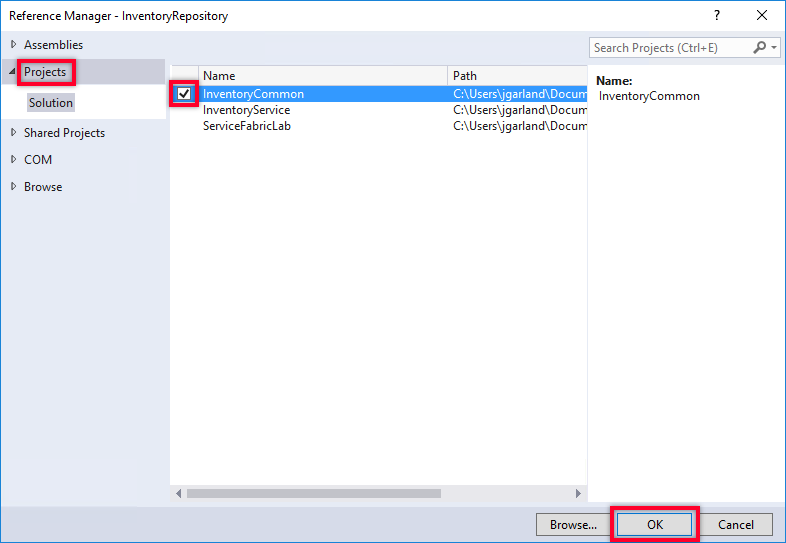
Adding a reference to the InventoryCommon project
-
Right-click the InventoryRepository project again use the Add -> New Folder command to add folder named "Controllers."
-
Right-click the "Controllers" folder. Use the Add -> Class... command to add a class file named InventoryController.cs. Then replace the contents of the file with the following code:
using System;
using System.Collections.Generic;
using System.Threading;
using System.Threading.Tasks;
using System.Web.Http;
using Microsoft.ServiceFabric.Data;
using Microsoft.ServiceFabric.Data.Collections;
using InventoryCommon;
using InventoryRepository.ServiceFabric;
namespace InventoryRepository.Controllers
{
[RoutePrefix("api/inventory")]
public class InventoryController : ApiController
{
private readonly IReliableStateManager _stateManager;
public InventoryController()
{
_stateManager = WebHostStartup.StateManager;
}
}
}
-
Add the following methods to the InventoryController class:
[HttpGet]
[Route("")]
public async Task<IEnumerable<InventoryItem>> GetItems()
{
using (var tx = _stateManager.CreateTransaction())
{
var inventoryDictionary = await _stateManager.GetOrAddAsync<IReliableDictionary<Guid, InventoryItem>>("inventoryDictionary");
var items = await inventoryDictionary.CreateEnumerableAsync(tx);
var result = new List<InventoryItem>();
using (var enumerator = items.GetAsyncEnumerator())
{
while (await enumerator.MoveNextAsync(CancellationToken.None))
{
result.Add(enumerator.Current.Value);
}
return result;
}
}
}
[HttpGet]
[Route("{itemId}")]
public async Task<InventoryItem> GetItem(Guid itemId)
{
using (var tx = _stateManager.CreateTransaction())
{
var inventoryDictionary = await _stateManager.GetOrAddAsync<IReliableDictionary<Guid, InventoryItem>>("inventoryDictionary");
var item = await inventoryDictionary.TryGetValueAsync(tx, itemId);
return item.HasValue ? item.Value : null;
}
}Each of these methods uses the Service Fabric Stateful Services' StateManager class to create a transaction scope, create or retrieve a ReliableDictionary object, and retrieve an item from that object. ReliableDictionary is part of the Reliable Collection types offered by Service Fabric. Reliable collections support high availability, scalability, and speed while offering a programming model that is similar to one for applications that run on a single computer rather than a cluster.
-
Now add the following methods to the InventoryController class:
[HttpPost]
[Route("")]
public async Task<InventoryItem> AddNewItem(InventoryItem item)
{
using (var tx = _stateManager.CreateTransaction())
{
var inventoryDictionary = await _stateManager.GetOrAddAsync<IReliableDictionary<Guid, InventoryItem>>("inventoryDictionary");
if (item.ItemId == Guid.Empty) item.ItemId = Guid.NewGuid();
await inventoryDictionary.AddAsync(tx, item.ItemId, item);
await tx.CommitAsync();
}
return item;
}
[HttpPost]
[Route("{itemId}/addinventory/{quantity}")]
public Task AddInventory(Guid itemId, Int32 quantity)
{
if (quantity < 0) throw new ArgumentException("Quantity must be a positive number", nameof(quantity));
return UpdateInventoryAsync(itemId, quantity);
}
[HttpPost]
[Route("{itemId}/removeinventory/{quantity}")]
public Task RemoveInventory(Guid itemId, Int32 quantity)
{
if (quantity < 0) throw new ArgumentException("Quantity must be a positive number", nameof(quantity));
return UpdateInventoryAsync(itemId, -1 * quantity);
}
private async Task UpdateInventoryAsync(Guid itemId, Int32 quantity)
{
using (ITransaction tx = _stateManager.CreateTransaction())
{
// Use the user’s name to look up their data
var inventoryDictionary = await _stateManager.GetOrAddAsync<IReliableDictionary<Guid, InventoryItem>>("inventoryDictionary");
var originalItem = await inventoryDictionary.TryGetValueAsync(tx, itemId);
if (originalItem.HasValue)
{
var updatedItem = InventoryItem.CreateCopy(originalItem.Value);
updatedItem.InventoryCount = updatedItem.InventoryCount + quantity;
await inventoryDictionary.TryUpdateAsync(tx, itemId, updatedItem, originalItem.Value);
await tx.CommitAsync();
}
}
}The UpdateInventoryAsync method does something that is subtle but important. Items stored in Reliable Collections are immutable. In order to update an InventoryItem with a new quantity, UpdateInventoryAsync copies the original InventoryItem, updates the quantity, and then replaces the original item in the dictionary with the new one by calling TryUpdateAsync.
-
Launch the application again from Visual Studio. Open the Service Fabric Explorer and confirm that there are now two services running in the cluster.
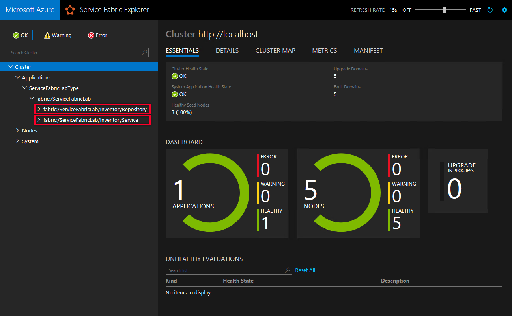
Services running in the cluster
Once you have confirmed that both services are shown in Service Fabric Explorer, use Visual Studio's Stop Debugging command to stop debugging and shut down the application.
Exercise 4: Connect the services in the cluster
In this exercise, you will connect the two services so the inventory service (which provides the UI) can transmit requests to inventory-repository service. This will allow you to add inventory items to the catalog as well as increase and decrease the quantity of each item. At the end of this exercise, you will be able to launch the application and adjust inventories in your browser.
-
Right-click the InventoryService project in Solution Explorer. Select Add -> Existing Item and select HttpCommunicationClient.cs in this lab's "Resources" folder. Then click Add.
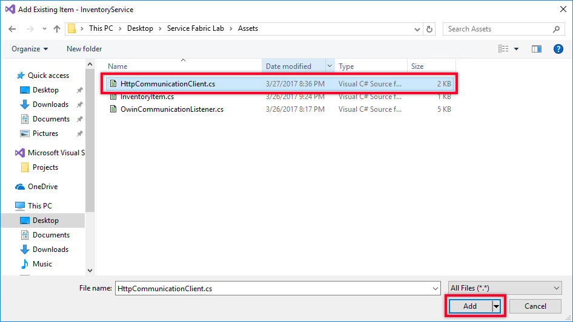
Importing HTTPCommunicationClient.cs
-
Right-click Dependencies in the InventoryService project, and then click Add Reference.....
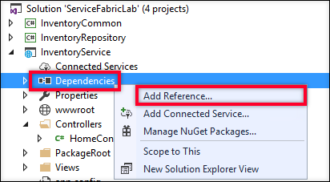
Adding a reference to the InventoryService project
-
Check the box next to the InventoryCommon project and click OK to add the project reference.
-
Open HomeController.cs in the InventoryService project's "Controllers" folder and add the following using statements at the top of the file:
using System.Fabric;
using System.Net.Http;
using System.Text;
using System.Threading;
using Microsoft.ServiceFabric.Services.Communication.Client;
using Microsoft.ServiceFabric.Services.Client;
using Newtonsoft.Json;
using InventoryCommon;
-
Scroll to the bottom of HomeController.cs file and add the following helper classes just before the final curly-brace:
public class ItemListViewModel
{
public IEnumerable<InventoryItem> InventoryItems { get; set; }
public InventoryItemType? SelectedItemType { get; set; }
}
public class InventoryQuantityViewModel
{
public Guid ItemId { get; set; }
public InventoryItemType ItemType { get; set; }
public String Display { get; set; }
public Boolean IsAdd { get; set; }
public Int32 Quantity { get; set; }
}
-
Next, add the following field definitions at the start of the HomeController class:
private readonly HttpCommunicationClientFactory _clientFactory
= new HttpCommunicationClientFactory(new ServicePartitionResolver(() => new FabricClient()));
private readonly Uri _serviceUri = new Uri($"{FabricRuntime.GetActivationContext().ApplicationName}/InventoryRepository");These values will be used by the code in InventoryService to locate and call the endpoints exposed by the InventoryRepository service.
-
Replace the existing Index method with the following method:
[HttpGet]
public async Task<IActionResult> Index(InventoryItemType? selectedItemType)
{
// If not item type is selected, just display a blank list
if (selectedItemType == null)
{
return View(new ItemListViewModel { InventoryItems = new InventoryItem[] { } });
}
// An item type has been selected - retrieve its contents.
var partitionKey = new ServicePartitionKey(0);
var partitionClient = new ServicePartitionClient<HttpCommunicationClient>(_clientFactory, _serviceUri, partitionKey);
var items = await partitionClient.InvokeWithRetryAsync(async (client) =>
{
var response = await client.HttpClient.GetAsync(new Uri($"{client.BaseUri}/api/inventory"));
if (!response.IsSuccessStatusCode)
{
throw new InvalidOperationException($"Error - {response.StatusCode}: {response.ReasonPhrase}");
}
var responseContent = await response.Content.ReadAsStringAsync();
var resultItems = JsonConvert.DeserializeObject<IEnumerable<InventoryItem>>(responseContent);
// Note - filter applied client-side for demo purposes only.
return resultItems.Where(x => x.ItemType == selectedItemType);
}, CancellationToken.None);
var viewModel = new ItemListViewModel
{
InventoryItems = items,
SelectedItemType = selectedItemType
};
return View(viewModel);
}
The new Index method checks to see if an InventoryItemType selection has been made. If an inventory type is selected, a call goes out to ServicePartitionClient.InvokeWithRetryAsync to retrieve the inventory items of that type from the Inventory service. The results are then made available to the view.
Note that filtering the returned list by item type on the client is not a pattern you would use in production, but is instead done for expediency. In the next exercise, you will learn how to improve on this by using Service Fabric's partitioning support.
-
Now open Index.cshtml in the project's "Views\Home" folder and replace its contents with the following markup:
@model InventoryService.Controllers.ItemListViewModel
@{
ViewData["Title"] = "Inventory List";
}
<div class="row" style="padding-bottom: 20px; padding-top: 20px;">
<div class="col-sm-12">
<form method="get" class="form-inline">
<div class="form-group">
<label asp-for="SelectedItemType"></label>
<select asp-for="SelectedItemType"
asp-items="@(new SelectList(Enum.GetNames(typeof(InventoryCommon.InventoryItemType))))"
class="form-control">
<option>Choose an item type</option>
</select>
</div>
<button type="submit" class="btn btn-primary">Select</button>
</form>
</div>
</div>
<div class="row">
<div class="col-sm-12">
<div class="table-responsive">
<table class="table table-condensed table-bordered table-responsive table-hover">
<thead>
<tr>
<th><span>Item Type</span></th>
<th><span>Name</span></th>
<th><span>Count</span></th>
<th><span>Add/Remove</span></th>
</tr>
</thead>
<tbody>
@foreach (var inventoryItem in Model.InventoryItems)
{
<tr>
<td><span>@inventoryItem.ItemType</span></td>
<td><span>@inventoryItem.Name</span></td>
<td><span>@inventoryItem.InventoryCount</span></td>
<td>
<a asp-action="AddInventory"
asp-route-itemId="@inventoryItem.ItemId"
asp-route-selectedItemType="@inventoryItem.ItemType">
<span>Increase</span>
</a>
|
<a asp-action="RemoveInventory"
asp-route-itemId="@inventoryItem.ItemId"
asp-route-selectedItemType="@inventoryItem.ItemType">
<span>Decrease</span>
</a>
</td>
</tr>
}
</tbody>
</table>
</div>
</div>
</div>
<div class="row">
<div class="col-sm-12">
<a asp-action="AddNewInventoryItem" asp-route-itemType="@Model.SelectedItemType"
class="btn btn-primary @(Model.SelectedItemType == null ? "disabled" : "")">
Add New Product
</a>
</div>
</div>This markup provides a user interface for selecting inventory types, viewing inventory items, and adding new inventory to the catalog.
-
Return to HomeController.cs. After the Index method, add the following methods:
[HttpGet]
public IActionResult AddNewInventoryItem(InventoryItemType itemType)
{
var newItem = new InventoryItem { ItemType = itemType };
return View(newItem);
}
[HttpPost]
public async Task<IActionResult> AddNewInventoryItem(InventoryItem newItem)
{
var partitionKey = new ServicePartitionKey(0);
var partitionClient = new ServicePartitionClient<HttpCommunicationClient>(_clientFactory, _serviceUri, partitionKey);
var results = await partitionClient.InvokeWithRetryAsync(async (client) =>
{
var newItemContent = new StringContent(JsonConvert.SerializeObject(newItem), Encoding.UTF8, "application/json");
var response = await client.HttpClient.PostAsync(new Uri($"{client.BaseUri}/api/inventory"), newItemContent);
if (!response.IsSuccessStatusCode)
{
throw new InvalidOperationException($"Error - {response.StatusCode}: {response.ReasonPhrase}");
}
var responseContent = await response.Content.ReadAsStringAsync();
return JsonConvert.DeserializeObject<InventoryItem>(responseContent);
}, CancellationToken.None);
return RedirectToAction("Index", new { SelectedItemType = newItem.ItemType });
}These methods allow new inventory to be added the catalog. The first creates a blank item. The second uses ServicePartitionClient to call the inventory service and pass it a new inventory item. If the item is successfully added, the user is redirected to the home page and shown all items of that type.
-
Right-click the "Home" folder in the project's "Views" folder and use the Add -> New Item... command to add an MVC View Page named AddNewInventoryItem.cshtml.
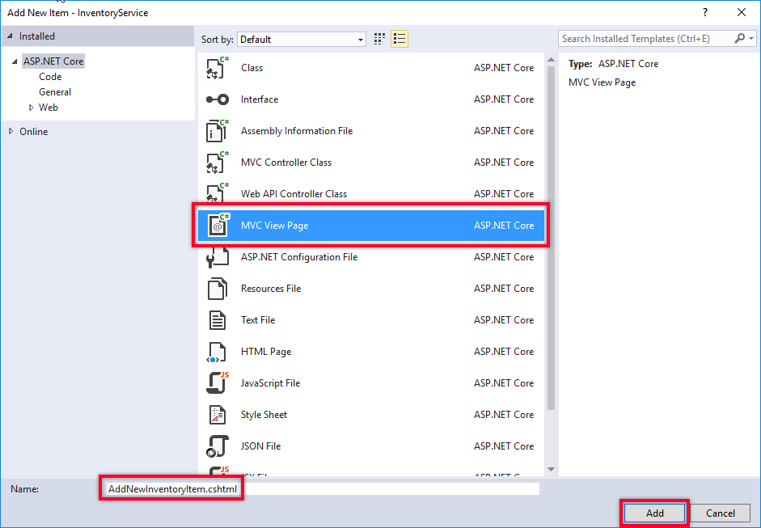
Adding a new view
-
Replace the contents of AddNewInventoryItem.cshtml with the following statements:
@model InventoryCommon.InventoryItem
@{
ViewData["Title"] = "Create Inventory Item";
}
<div class="row">
<div class="col-sm-12">
<form asp-action="AddNewInventoryItem" method="post">
<div class="form-group">
<label asp-for="Name"></label>
<input asp-for="Name" class="form-control" placeholder="Name" />
</div>
<div class="form-group">
<label asp-for="ItemType"></label>
<select asp-for="ItemType"
asp-items="@(new SelectList(Enum.GetNames(typeof(InventoryCommon.InventoryItemType))))"
class="form-control">
<option>Choose an item type</option>
</select>
</div>
<div>
<button type="submit" class="btn btn-primary">Add Inventory Item</button>
<a asp-action="index" asp-route-selectedItemType="@(Model.ItemType)" class="btn btn-default">Cancel</a>
</div>
</form>
</div>
</div>
-
Return to HomeController.cs and add the following methods to the HomeController class:
[HttpGet]
public async Task<IActionResult> AddInventory(Guid itemId, InventoryItemType selectedItemType)
{
var partitionKey = new ServicePartitionKey(0);
var partitionClient = new ServicePartitionClient<HttpCommunicationClient>(_clientFactory, _serviceUri, partitionKey);
var item = await partitionClient.InvokeWithRetryAsync(async (client) =>
{
var response = await client.HttpClient.GetAsync(new Uri($"{client.BaseUri}/api/inventory/{itemId}"));
if (!response.IsSuccessStatusCode)
{
throw new InvalidOperationException($"Error - {response.StatusCode}: {response.ReasonPhrase}");
}
var responseContent = await response.Content.ReadAsStringAsync();
return JsonConvert.DeserializeObject<InventoryItem>(responseContent);
}, CancellationToken.None);
var viewModel = new InventoryQuantityViewModel
{
ItemId = item.ItemId,
ItemType = item.ItemType,
Display = $"{item.Name} ({item.ItemType})",
IsAdd = true,
Quantity = 1
};
return View("UpdateInventoryQuantity", viewModel);
}
[HttpPost]
public async Task<IActionResult> AddInventory(InventoryQuantityViewModel viewModel)
{
var partitionKey = new ServicePartitionKey(0);
var partitionClient = new ServicePartitionClient<HttpCommunicationClient>(_clientFactory, _serviceUri, partitionKey);
await partitionClient.InvokeWithRetryAsync(async (client) =>
{
var uri = new Uri($"{client.BaseUri}/api/inventory/{viewModel.ItemId}/addinventory/{viewModel.Quantity}");
var response = await client.HttpClient.PostAsync(uri, null);
if (!response.IsSuccessStatusCode)
{
throw new InvalidOperationException($"Error - {response.StatusCode}: {response.ReasonPhrase}");
}
return;
}, CancellationToken.None);
return RedirectToAction("Index", new { SelectedItemType = viewModel.ItemType });
}
[HttpGet]
public async Task<IActionResult> RemoveInventory(Guid itemId, InventoryItemType selectedItemType)
{
var partitionKey = new ServicePartitionKey(0);
var partitionClient = new ServicePartitionClient<HttpCommunicationClient>(_clientFactory, _serviceUri, partitionKey);
var item = await partitionClient.InvokeWithRetryAsync(async (client) =>
{
var response = await client.HttpClient.GetAsync(new Uri($"{client.BaseUri}/api/inventory/{itemId}"));
if (!response.IsSuccessStatusCode)
{
throw new InvalidOperationException($"Error - {response.StatusCode}: {response.ReasonPhrase}");
}
var responseContent = await response.Content.ReadAsStringAsync();
return JsonConvert.DeserializeObject<InventoryItem>(responseContent);
}, CancellationToken.None);
var viewModel = new InventoryQuantityViewModel
{
ItemId = item.ItemId,
ItemType = item.ItemType,
Display = $"{item.Name} ({item.ItemType})",
IsAdd = false,
Quantity = 1
};
return View("UpdateInventoryQuantity", viewModel);
}
[HttpPost]
public async Task<IActionResult> RemoveInventory(InventoryQuantityViewModel viewModel)
{
var partitionKey = new ServicePartitionKey(0);
var partitionClient = new ServicePartitionClient<HttpCommunicationClient>(_clientFactory, _serviceUri, partitionKey);
await partitionClient.InvokeWithRetryAsync(async (client) =>
{
var uri = new Uri($"{client.BaseUri}/api/inventory/{viewModel.ItemId}/removeinventory/{viewModel.Quantity}");
var response = await client.HttpClient.PostAsync(uri, null);
if (!response.IsSuccessStatusCode)
{
throw new InvalidOperationException($"Error - {response.StatusCode}: {response.ReasonPhrase}");
}
return;
}, CancellationToken.None);
return RedirectToAction("Index", new { SelectedItemType = viewModel.ItemType });
}
-
Repeat Step 10 to add a view named UpdateInventoryQuantity.cshtml to the "Views\Home" folder. Then replace the file's contents with the following statements:
@model InventoryService.Controllers.InventoryQuantityViewModel
@{
ViewData["Title"] = Model.IsAdd ? "Add Inventory" : "Remove Inventory";
}
<div class="row">
<div class="col-sm-12">
<form asp-action=@(Model.IsAdd ? "AddInventory" : "RemoveInventory") method="post">
<input asp-for="ItemId" type="hidden" />
<input asp-for="ItemType" type="hidden" />
<input asp-for="IsAdd" type="hidden"/>
<div class="form-group">
<label>Item:</label>
<input asp-for="Display" class="form-control" placeholder="Name" readonly/>
</div>
<div class="form-group">
<label asp-for="Quantity"></label>
<input asp-for="Quantity" type="number" class="form-control"/>
</div>
<div>
<button type="submit" class="btn btn-primary">@(Model.IsAdd ? "Add Inventory" : "Remove Inventory")</button>
<a asp-action="index" class="btn btn-default">Cancel</a>
</div>
</form>
</div>
</div>This markup defines a form that you can use to either increase or decrease the inventory quantity for a given inventory item.
-
Launch the application again from Visual Studio. Confirm that the page shown in the browser resembles the one below.
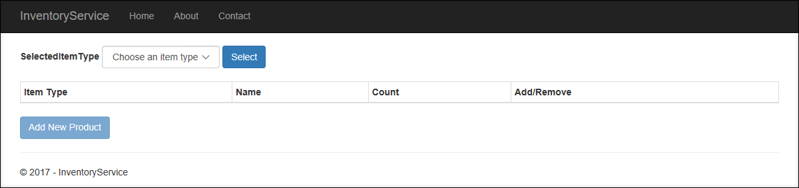
UI for managing inventory
-
Select HeatingCooling from the drop-down list and click the Select button. Click the Add New Product button and use the form to add an air conditioner to the catalog.
-
Now select HandTools from the drop-down list and add a hammer and a screwdriver to the catalog.
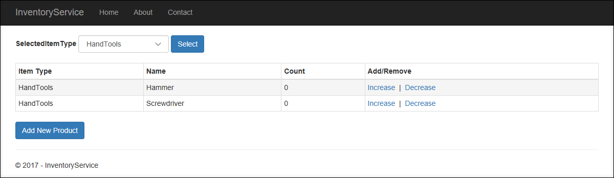
HandTools inventory showing 0 hammers and 0 screwdrivers
-
Click Increase in the hammer row. In the "Add Inventory" page, set Quantity to 10 and click the Add Inventory button. Confirm that you are redirected to the home page and that the catalog now shows 10 hammers.
-
Now click Decrease in the hammer row and decrease the quantity of hammers to 1.
-
Once you have confirmed that you can manage inventory in this manner, use Visual Studio's Stop Debugging command to stop debugging and shut down the application.
Although the application that you deployed has only two services, the same pattern can be used to create more complex applications consisting of tens or even hundreds of services. And using Service Fabric to knit these services together makes some interesting scenarios possible.
Exercise 5: Enable partitioning and demonstrate node failover
Two of the motivations for using Azure Service Fabric as a platform for microservices are scalability and reliability. An important ingredient in the recipe for both is partitioning. Proper partitioning spreads workloads across nodes in the cluster so no node becomes overloaded. You can't change the way a Service Fabric app is partitioned without redeploying the app, so it helpful to plan your partitioning strategy ahead of time to reduce unwanted downtime.
In this exercise, you will update the partitioning scheme for the inventory-repository service to assign different item types to different partitions in the cluster. Then you will use Service Fabric Explorer to simulate a node failure and see how partition replicas help create a fault-tolerant system.
-
Open ApplicationManifest.xml in the ServiceFabricLab project. Change the InventoryRepository_PartitionCount value to 10 and add entries for Inventory_PartitionLowKey and Inventory_PartitionHighKey as shown below. This will create 10 partitions: one for each inventory item type.
<Parameter Name="InventoryRepository_PartitionCount" DefaultValue="10" />
<Parameter Name="Inventory_PartitionLowKey" DefaultValue="0" />
<Parameter Name="Inventory_PartitionHighKey" DefaultValue="9" />
-
Locate the UniformInt64Partition element and update its LowKey and HighKey values as follows:
<UniformInt64Partition PartitionCount="[InventoryRepository_PartitionCount]" LowKey="[Inventory_PartitionLowKey]" HighKey="[Inventory_PartitionHighKey]" />
-
Set InventoryRepository_PartitionCount to 10 in each of the XML configuration files in the "ApplicationParameters" folder — Cloud.xml, Local.1Node.xml, and Local.5Node.xml:
<Parameter Name="InventoryRepository_PartitionCount" Value="10" />
These XML files contain configuration settings that you can use to customize individual Service Fabric deployments. The values in these files override the corresponding values in ApplicationManifest.xml.
-
Open HomeController.cs in the InventoryService project's "Controllers" folder. Modify each occurrence of new ServicePartitionKey(0) as follows:
- In the
Index method, replace it with new ServicePartitionKey((Int64)selectedItemType)
- In the
AddNewInventoryItem method, replace it with new ServicePartitionKey((Int64)newItem.ItemType)
- In the first
AddInventory method, replace it with new ServicePartitionKey((Int64)selectedItemType)
- In the second
AddInventory method, replace it with new ServicePartitionKey((Int64)viewModel.ItemType)
- In the first
RemoveInventory method, replace it with new ServicePartitionKey((Int64)selectedItemType)
- In the second
RemoveInventory method, replace it with new ServicePartitionKey((Int64)viewModel.ItemType)
Your application is now ready to run using Service Fabric partitioning. Calls from the inventory service to the inventory-repository service use the currently selected inventory item type to configure a ServicePartitionKey value, which is used by ServicePartitionClient to retrieve an address for calls.
-
Launch the application and add several inventory items as you did at the end of Exercise 4. Be sure to add at least one item in the HandTools category.
-
Launch Service Fabric Explorer and select fabric:/ServiceFabricLab/InventoryRepository under Applications. Confirm that 10 nodes appear underneath — one for each partition that you created.
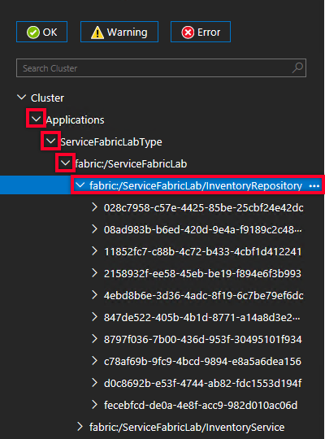
Selecting the inventory-repository service
-
Click each of the partitions until you find the one whose Low Key and High Key values are 3, which is the integer value for HandTools in the InventoryItemType enumeration. Then go to the "Replicas" section at the bottom of the page and make note of the node name for the Primary replica.
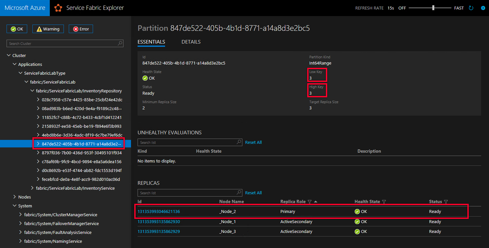
Locating the HandTools partition
-
In the Nodes section of the treeview on the left, click the node whose name matches the one identified in the previous step.
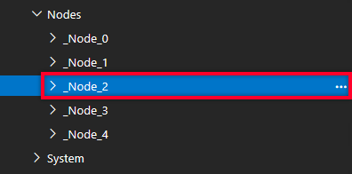
Selecting the primary replica node
-
Click Actions in the upper-right corner of the page and select Deactivate (restart) from the ensuing menu.
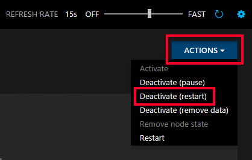
Deactivating the primary replica node
-
In the "Confirm Node Deactivation" dialog, type the node name into the text box click the Deactivate (restart) button to confirm that you wish to deactivate the node.
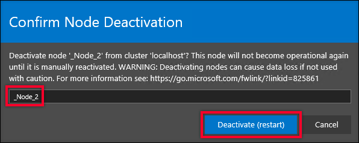
Confirming deactivation
Deactivation will take a couple minutes, during which Service Fabric will detect the non-functional node and rebalance the partitions and replicas across the remaining partitions.
-
When Service Fabric Explorer reports that it has detected problems with the cluster, click the partition again. Confirm that the primary replica has been moved to another node.
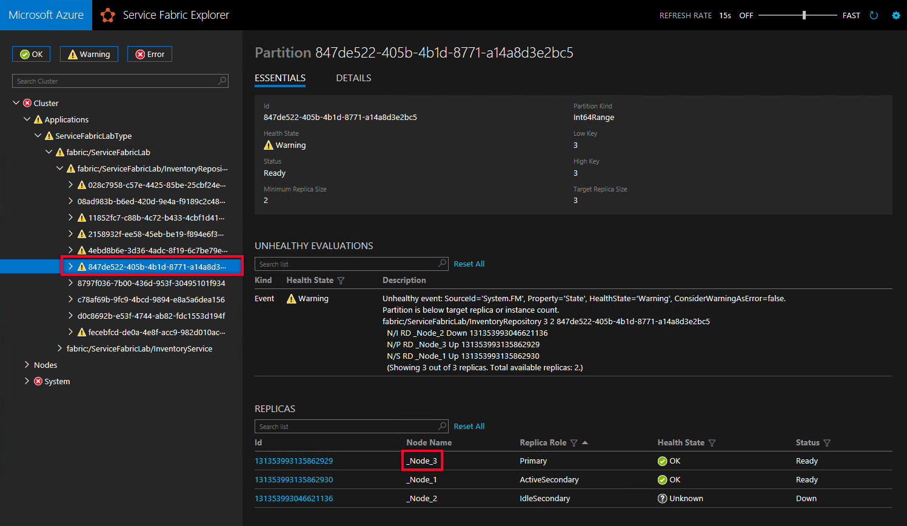
The rebalanced partition
-
Switch to the browser window in which the service is displayed. Select HandTools from the drop-down list and click Select. This will transmit a request from the inventory service to the inventory-repository service using a new URL for the partition.
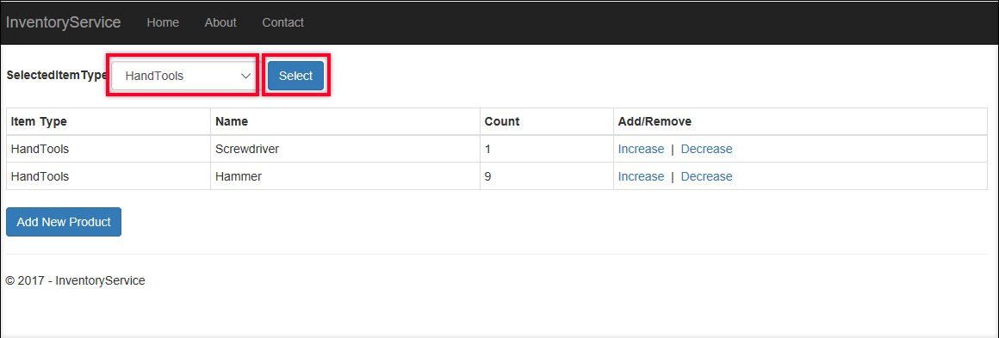
Displaying HandTool items
-
Return to Service Fabric Explorer and click the node that you deactivated in Step 10. Then click Actions and select Activate from the menu. Once more, Service Fabric will notice a change to the nodes that it is managing, and will rebalance the partition replicas to take advantage of the newly available node.
-
Confirm that after a few seconds, the warnings and errors in Service Fabric Explorer disappear and reflect the now-stable status of the cluster.
Finish up by using Visual Studio's Stop Debugging command to shut down the application for the final time.
Summary
The application you built was fairly simple. It included an app to provide a Web front-end and a service for storing inventory. A more complete microservices implementation might include several such services, each performing a critical task for the overall application, and each communicating with the others and leveraging Service Fabric to resolve locations and addresses. In some cases, individual services might be assigned to specific subsets of the cluster that Service Fabric is managing, allowing different services to scale independently — a hallmark of a true microservices implementation.
Copyright 2017 Microsoft Corporation. All rights reserved. Except where otherwise noted, these materials are licensed under the terms of the MIT License. You may use them according to the license as is most appropriate for your project. The terms of this license can be found at https://opensource.org/licenses/MIT.